Artista
Artista
Artista
Artista
Artista
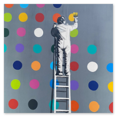
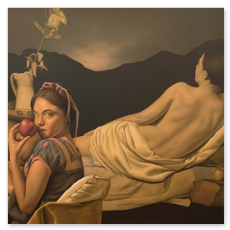
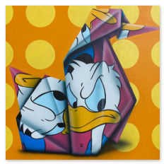
 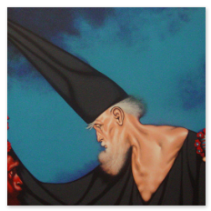
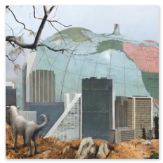
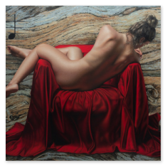
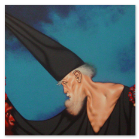
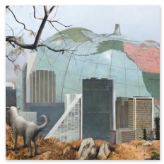
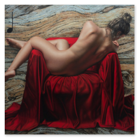
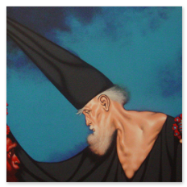
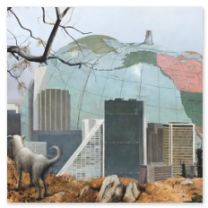
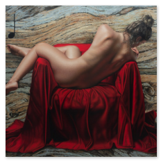
Los inicios de Galería Divart se remontan a 1983, con la idea de Isaac Green de promover artistas mexicanos, es en esos años donde conoce artistas de la talla de Rufino Tamayo, Rossy Green, Víctor Villarreal, Víctor Gutiérrez, Leonardo Nierman, Marco Antonio Zepeda y gracias a ellos decide abrir su primera Galería la cual se localizaba en el Hotel Camino Real de la Ciudad de México.
Mas tarde, gracias a una visión emprendedora y conocimiento del arte del Lic. Isaac Green, la Galería Divart se instala en el Hotel JW Marriott en Polanco con el firme propósito de trabajar exclusivamente con artistas mexicanos e internacionalizarlos.
Escultores como Heriberto Juárez, Salvador Jaramillo y Armando Amaya, se localizan en varios museos del mundo. Hoy Divart, Galería de Arte es una de las principales y más prestigiadas galerías de México, su objetivo sigue siendo el mismo: Dar a conocer el arte mexicano alrededor del mundo con una política de servicio, atención y calidad.
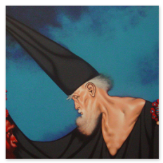
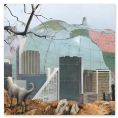
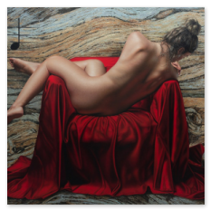
Somos una Galería de Arte dedidaca a ofertar obras de arte de distintos artistas mexicanos, además de contar con un financiamiento para la adquisición de las obras, comprometidos con la exposición y visión de artistas mexicanos, ubicados en una zona importante de la Ciudad de México siendo una de las más importantes dentro del rango de Galerías de Arte.
Todo en un solo lugar, para que nuestros clientes y amigos encuentren esa obra de arte que los acompañará toda su vida. Estamos a la vanguardia, con artistas reconocidos a nivel mundial, ofreciéndote siempre el mejor precio y el sello de calidad que nos ha distinguido todo este tiempo.